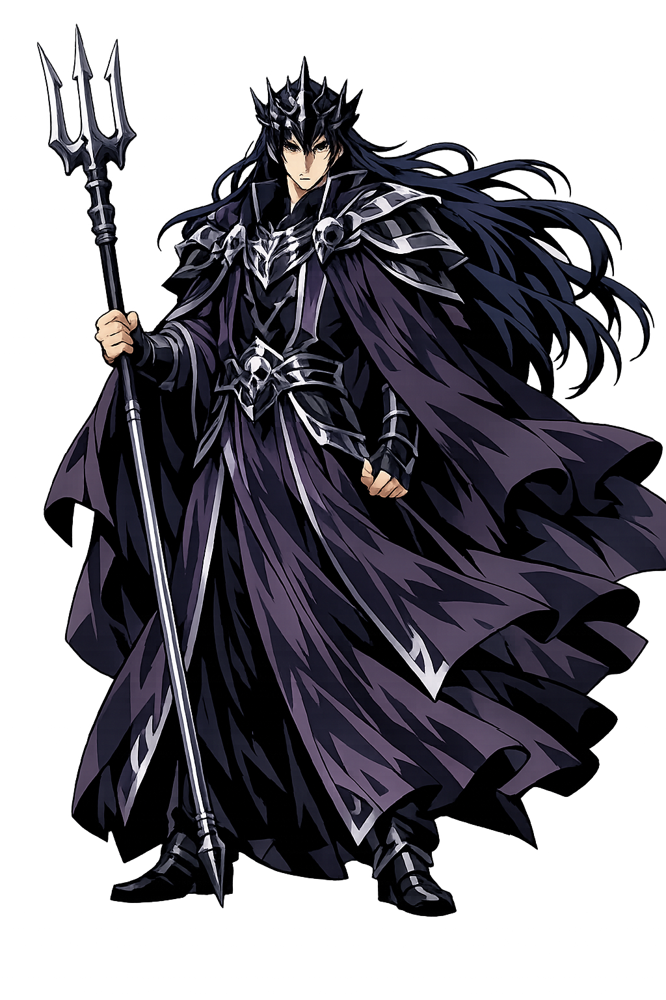

The Authentic Orthography
Underworld, Wealth · The Unseen One (from ἀ- + εἶδον)

Unicode restoration and ASCII comparison
Ἅιδης
The name in its original Greek form. Hádēs (Ἅιδης) is attested in the source tradition — “The Unseen One (from ἀ- + εἶδον)”. Its long vowels and acute accents carry the full phonetic and orthographic weight of the source tradition.
hades
Reduced to plain hades, the name loses everything that made it specific: long vowels and acute accents. What remains is an ASCII string that machines can parse but that no longer speaks with its original voice.
Hádēs
The Unicode restoration recovers what ASCII flattened. Hádēs restores long vowels and acute accents, returning the name to its original written dignity. The domain encodes to Punycode, but the browser displays the truth.
Hádēs.com → xn--hds-ela5w.com
The non-ASCII characters in Hádēs are encoded while the ASCII remains visible. To the DNS, it is Punycode. To humanity, it is Hádēs.
How Hádēs travels from ancient script to the modern URL
Greek Ἅιδης; from ἀ- “un-" + εἶδον “to see", hence “the unseen one".
Underworld, Wealth
The Unicode restoration Hádēs preserves Greek stress and length; the ASCII form hades loses these features.
How Hádēs was spoken
The Dead, Wealth, and the Underworld
Hádēs is not evil; he is the necessary guardian of the dead. His realm is not hell but the place beneath the earth where all souls go — good and bad alike. He is also Plouton, the wealthy one, because the earth holds grain, metals, and the buried dead.
Not a place of torment but the common destination of all mortals, ruled with strict impartiality.
As Plouton he owns gold, silver, and the fertility that rises from below.
A place of shadow, gates, and the three-headed dog Kerberos who allows entry but not exit.
Unlike other gods, Hádēs almost never intervenes in human affairs; his realm is governed by law.
Stories of Hádēs
Hádēs appears rarely in Greek myth because his realm is separate from the world of the living. His most important myth is the abduction of Persephonē, which explains the seasons and establishes his connection to Demeter.
With Zeús's permission, Hádēs burst from the earth in a golden chariot and seized Persephonē while she gathered flowers in a meadow. Demeter's grief caused famine and winter until Zeús negotiated a compromise: Persephonē spends part of the year above with her mother and part below with her husband. This is the Greek explanation for the seasons — life and death take turns because even gods must share.
In the underworld, the dead are judged by Minos, Aiakos, and Rhadamanthys — three former mortals made just. The wicked go to Tartaros, the ordinary dead to the fields of Asphodel, and the heroic few to Elysium. Hádēs presides over this system without passion; his justice is administrative, not punitive.
Orpheus descended to Hádēs's realm to retrieve his dead wife Eurydice. His music moved even the underworld king, who allowed her to follow on the condition that Orpheus not look back. At the threshold of the upper world, Orpheus looked, and she was lost. The myth shows Hádēs as capable of pity but bound by the law of his realm.
The Cyclopes gave Hádēs a helmet that made the wearer invisible. He lent it to Athena in the Gigantomachy and to Perseus for his mission against Medousa. The cap is the material form of his nature: Hádēs is the unseen, and his power is to make others unseen as well.
Hádēs is the god we do not want to meet. Not because he is cruel, but because meeting him means the story is over. He is the final impartiality: rich and poor, hero and coward, all pass through his gates. The Greeks found this terrifying but also just. There is no favoritism in death.
Enter Extended Lore